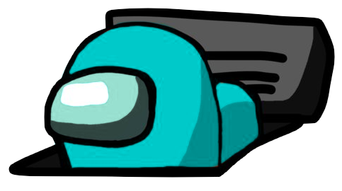
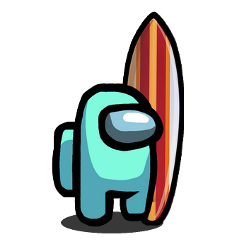

ACCUEIL
LISTE DES SPOTS
Le Cap Ferret
Hossegor
Marseille
Langrune sur Mer
Perros-Guirec
La Côte des Basques
Oléron
La Torche
Palavas-les-Flots
Collignon
A PROPOS
NOS PARTENAIRES
CONTACT
Accueil
Selectionne ton spot de surf préféré et click sur son nom pour ajouter ou voir les informations su rcelui ci !